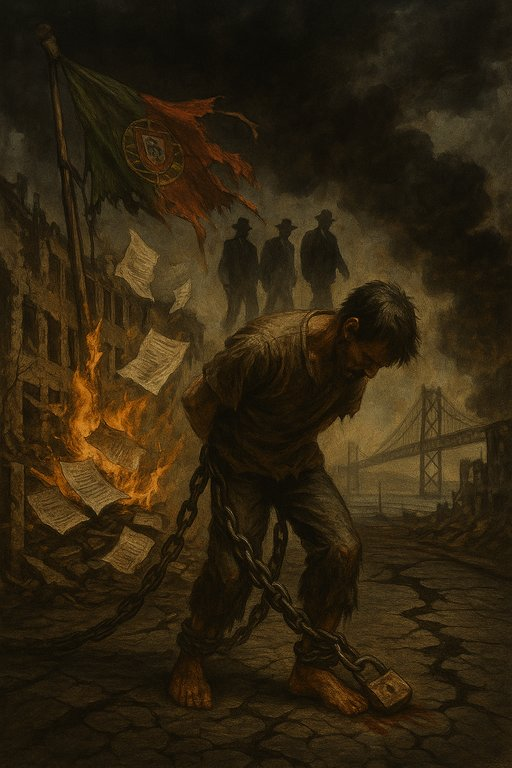

Publicado em 2025-05-26 08:32:11
Portugal arrasta-se há meio século num labirinto de crises sucessivas, sem reformas estruturais, sem coragem política, sem visão.
Enquanto o mundo girou, digitalizou-se, reinventou-se, Portugal ficou parado — agarrado a leis velhas, a um sistema de justiça fossilizado, e a partidos que vivem numa bolha de autoproteção estatística.
A justiça portuguesa é um cemitério de esperança.
Demora décadas a julgar — quando julga. Serve os poderosos, atormenta os fracos.
É herdeira direta do Estado Novo: lenta, oblíqua, impenetrável. Foi desenhada para proteger quem comanda e esmagar quem ousa viver honestamente.
O sistema partidário é uma máquina de sobrevivência eleitoral.
Governa para a imagem, para as sondagens, para o aplauso fácil — mas nunca para os portugueses reais.
Os salários são baixos porque o modelo económico é miserável: turismo, serviços e consumo interno alimentado a crédito.
Uma economia de sobrevivência, sem inovação, sem valor acrescentado, sem fôlego.
As empresas vegetam, geridas com laxismo, presas ao compadrio e à evasão fiscal institucionalizada.
O Fisco atira-se aos trabalhadores e pequenos empresários com fúria cega, mas fecha os olhos a fortunas inexplicáveis, à fraude organizada com laços políticos, às grandes evasões disfarçadas de "planeamento fiscal".
Ser honesto em Portugal tornou-se o verdadeiro crime.
O sistema partidário já só é uma comédia e o povo português, desiludido por 50 anos de falências e fraude, deixou de confiar nas instituições do estado.
A corrupção já não é exceção — é engrenagem.
Está no Estado central, nas autarquias, nos contratos públicos, nas decisões de planeamento, nas licenças, nos favores, nos silêncios cúmplices.
Vivemos num país onde:
Portugal está a caminho da falência moral, social e económica.
Condenado a um destino de exclusão, pobreza e decadência, como um país africano esquecido da Europa, mas com sol, vinho e fado para turista ver.
“Portugal não está em crise — está em agonia moral.
Enquanto os rostos engravatados desfilam nos corredores do poder, o povo arrasta correntes invisíveis feitas de salários miseráveis, justiça ausente e esperança envenenada.
Ser honesto tornou-se perigoso. Ser pobre, uma sentença.
E neste país onde tudo muda para que nada mude, quem ousa gritar é tratado como louco, quando na verdade é o único são.”
Por Francisco Gonçalves
Imagem cortesia de OpenAI (c)